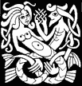

Lullaby n° 1
Quello che vi racconto
è un fatto un poco strano
che ha per protagonista
un cane un poco nano
e un gatto qualunquista
rognoso e un pò villano.
Han nomi di battesimo
i nobili nemici
Fiocco, il cagnaccio nano
Mimmo il gatto villano.
Dormiva sull'amaca
un dì di primavera
ronfante e puzzolente
Fiocco il nullafacente.
Passava, quasi per caso
infatti andava a naso
Mimmo gatto di zona
dalla zampata buona.
Avea sete il micetto
e al cane dirimpetto
degustò tutta l'acqua
“Tanto il cane sonnecchia"
Ma non dormia il feroce
che ansando a piè veloce
si scagliò sull'ingenuo
quasi fosse un bel premio.
Lo afferrò per la coda
lo tirò per i baffi
che svegliò anche i sassi.
Per fortuna passava
e le multe prendeva
un vigile cagnaccio
che con moglie e famiglia
facea spese allo spaccio.
S'intromette e divide
fischia forte e le suona
e la valle rintrona
di ceffoni ai villani.
Fiocco il cagnaccio nano
va a villeggiare al fresco
paga i danni al micetto
che già scappa sul tetto.
E finisce la storia
sopra tutti i giornali
del micetto assetato
e del cagnaccio incazzato.
E ora, a parte questi stornelli
dormite bene, bambini belli
che i gatti di notte
son tutti bigi
e i cani, anche quelli
dormon felici.
M.J.M 93

Mimmo: Mimmo, soriano dalla zampa di velluto
Fiocco: Fiocco il cagnaccio nano